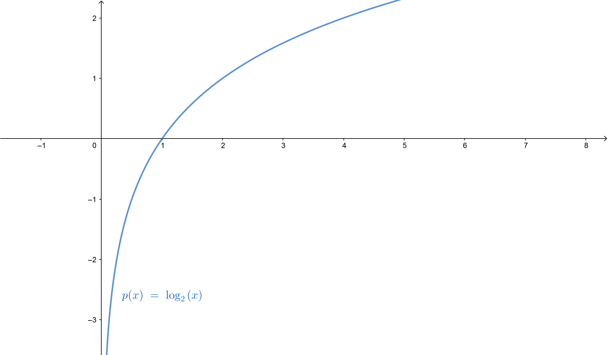
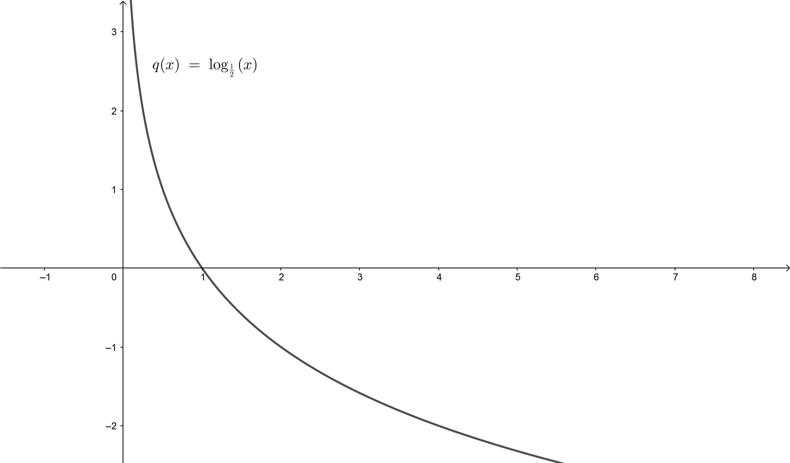

Funkcijom $f: \mathbb{R} \rightarrow \mathbb{R^{+}}, \mathbb{R} \ni x \rightarrow f(x)=a^{x}=y \in \mathbb{R^{+}}$ ostvaruje se bijektivno preslikavanje skupa $\mathbb{R}$ na skup $\mathbb{R^{+}}$, pa postoji inverzna funkcija ove funkcije koja je data sa $ f^{-1}: \mathbb{R^{+}} \rightarrow \mathbb{R}, \mathbb{R^{+}} \ni y \rightarrow f^{-1}(y)= \log_{a}y=x \in \mathbb{R}$. Funkcija $y= \log_{a}x, a>0, a \neq 1, x>0$ naziva se logaritamska funkcija. Zbog inverznosti važi $\log_{a}a^{x}=x$, za svako $x$.
Osobine: Iz relacija za eksponencijalnu funkciju se izvode osobine za logaritamsku.
1. Definisana samo za $x>0$ i svakoj vrednosti $x$ odgovara samo jedna vrednost.
2. Za $ 0< a <1$ funkcija je monotono opadajuća, a za $a>1$ monotono rastuća.
3. $\log_{a}1=0$ i $\log_{a}a=1$. To znamo iz jednačina $x=a^{y}$ tj. $1=a^{0}$ i $a=a^{1}$.
U Geogebra apletu možemo da vidimo izgled grafika za različitom bazom.
Logaritme sa bazom $a=10$ zovemo dekadni logaritam i pišemo $\log x$. Ako je baza $a=e$ takav logaritam zovemo prirodni i pišemo $\ln(x)$. Njemu inverzna funkcija je $y=e^{x}$.
1. $\log_{a}xy=\log_{a}x + \log_{a}y $
2. $\log_{a} \dfrac{x}{y}=\log_{a} x - \log_{a} y$
3. $\log_{a} x^{y}=y \log_{a} x$
4. $\log_{a} a^{x}=x$
5. $a^{\log_{a} x} =x$
6. $\log_{a} x=\frac{\log_{b} x}{\log_{b}} a$
7. $\log_{a} b=\frac{1}{\log_{a} b} $
8. $\log_{a^{r}} x=\dfrac{1}{r}log_{a} x $
Na slikama ispod možemo videti grafike logaritamske funkcije kada je baza veća od jedan, i kada je manja od jedan.
 